old approach: fsck(file system checker)
new approach: journaling(also known as write-ahead-logging)
A Detailed Example
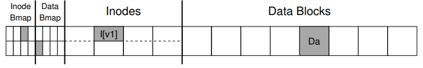
If you look at the structures in the picture, you can see that a single inode is allocated (inode number 2), which is marked in the inode bitmap, and a single allocated data block (data block 4), also marked in the data bitmap. The inode is denoted I[v1],
let’s see the simple inode inside:
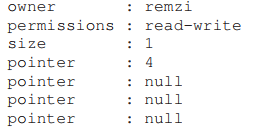
In this simplified inode,
- the size of the file is 1 (it has one block allocated),
- the first direct pointer points to block 4 (the first data block of the file, Da)
- all three other direct pointers are set to null (indicating that they are not used)
When we append to the file, we are adding a new data block to it, and update on-disk structures.
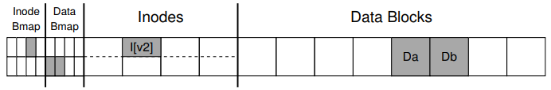
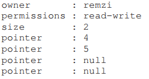
we must update three blocks to do this update.
- Data bitmap
- Inodes
- Data Blocks
when user issues a write() system call, usually it will cache them in the main memory first for some time, then to the disk. If a crash happens and will interfere with these updates to the disk.
Crash Scenarios
Three outcomes when crash:
- Just the data block (Db) is written to disk.(no a bit deal)
- Just the updated inode (I[v2]) is written to disk.(it could cause new problem: file-system inconsistency. The on-disk bitmap is telling us that data block 5 has not been allocated, but the inode is saying that it has. This disagreement in the file system data structures is an inconsistency in the data structures of the file system;)
- Just the updated Data bitmap (B[v2]) is written to disk.(this cause a space leak, as block 5 would never be used by the file system)
- …
Solution #1: The File System Checker
fsck is too slow:
scanning the entire disk to find all the allocated blocks and read the entire directory tree may take many minutes or hours. Performance of fsck, as disks grew in capacity and RAIDs grew in popularity, became prohibitive.
This situation is akin to dropping your keys on the floor in your bedroom, and then commencing a search-the-entire-house-for-keys recovery algorithm, starting in the basement and working your way through every room. It works but is wasteful.
Solution #2: Journaling (or Write-Ahead Logging)
Let’s see EXT3.
Most of the on-disk structures are identical to Linux ext2(disk is divided into block groups). The new key structure is the journal itself.
ext2 file system looks like:
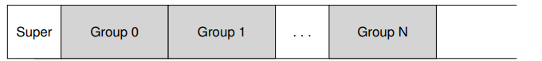
Assuming the journal is palced within the same file system image (though sometimes it is placed on a separate device, or as a file within the file system), an ext3 file system with a journal looks like this:
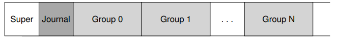
Data Journaling
Let’s look at a simple example to understand how data journaling works.
Say we have our canonical update again, where we wish to write the inode (I[v2]), bitmap (B[v2]), and data block (Db) to disk again. Before writing them to their final disk locations, we are now first going to write them to the log (a.k.a. journal). This is what this will look like in the log:
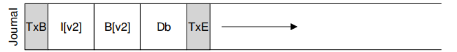
You can see we have written five blocks here. The transaction begin (TxB) tells us about this update, including information about the pending update to the file system), as well as some kind of transaction identifier (TID). The middle three blocks just contain the exact contents of the blocks themselves; this is known as physical logging as we are putting the exact physical contents of the update in the journal (an alternate idea, logical logging, puts a more compact logical representation of the update in the journal, e.g., “this update wishes to append data block Db to file X”, which is a little more complex but can save space in the log and perhaps improve performance). The final block (TxE) is a marker of the end of this transaction, and will also contain the TID.
Once this transaction is safely on disk, we are ready to overwrite the old structures in the file system; this process is called checkpointing. Thus, to checkpoint the file system (i.e., bring it up to date with the pending update in the journal), we issue the writes I[v2], B[v2], and Db to their disk locations as seen above; if these writes complete successfully, we have successfully checkpointed the file system and are basically done.
So the steps of operation:
- Journal write:
- Checkpoint: 就是将 journal 里面的disk更新信息，写到原本的位置中
Best way is to issue all the five block at once. However, when the changing data is big, OS may reorder the write sequence, it may write TxB, I[v2], B[v2], and TxE and only later write Db. Unfortunately, if the disk loses power between (1) and (2), this is what ends up on disk:
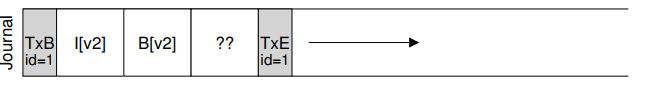
FS can not know if the fourth block is wrong. so in recovery, it can cause problem, even worse if the data in there belongs to superblock, which could render the FS unmountable.
ASIDE: FORCING WRITES TO DISK To enforce ordering between two disk writes, modern file systems have to take a few extra precautions. In olden times, forcing ordering between two writes, A and B, was easy: just issue the write of A to the disk, wait for the disk to interrupt the OS when the write is complete, and then issue the write of B. Things got slightly more complex due to the increased use of write caches within disks. With write buffering enabled (sometimes called
immediate reporting), a disk will inform the OS the write is complete when it simply has been placed in the disk’s memory cache, and has not yet reached disk. If the OS then issues a subsequent write, it is not guaranteed to reach the disk after previous writes; thus ordering between writes is not preserved. One solution is to disablewrite buffering. However, more modern systems take extra precautions and issue explicit write barriers; such a barrier, when it completes, guarantees that all writes issued before the barrier will reach disk before any writes issued after the barrier. All of this machinery requires a great deal of trust in the correct operation of the disk. Unfortunately, recent research shows that some disk manufacturers, in an effort to deliver “higher performing” disks, explicitly ignore write-barrier requests, thus making the disks seemingly run faster but at the risk of incorrect operation [C+13, R+11]. As Kahan said, the fast almost always beats out the slow, even if the fast is wrong.
To avoid this problem, the file system issues the transactional write in two steps.
- it writes all blocks except the TxE block to the journal, issuing these writes all at once
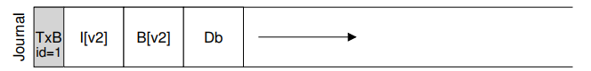
- When those writes complete(There will be a flush() CMD before TxE), the file system issues the write of the TxE block, thus leaving the journal in this final, safe state:
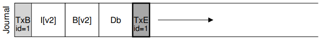
So the final process is:
Journal write: write the first 4 chunksJournal commit: wait 1st complete and write TxE to the log( This could cause inefficience when transfer data)Checkpoint: Write contents of the update to their final on-disk locations
to solve the efficiency problem, we could inlcude a
checksumin TxB and TxE, then we could write the entire transaction at once, without any wait. During recovery, if the file system sees a mismatch in the computed checksum versus the stored checksum, then it can discard the update in journal.
Making The Log Finite
- FS buffers updates in memory for some time(few seconds);
- when write to the disk, first write to journal
- after transaction complete, FS checkpoint those blocks to final location on disk
Log has finite size and in order to continue log new write, FS treat the log as a circular data structure, namely circular log.
Once a checkpoint success, FS should free the space. FS could simply mark the oldest and newest no-checkpointed transaction in a journal superblock.
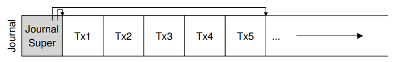
In the journal superblock (not to be confused with the main file system superblock), the journaling system records enough information to know which transactions have not yet been checkpointed, and thus reduces recovery time as well as enables re-use of the log in a circular fashion. And thus we add another step to our basic protocol:
- Journal write:
- Jornal commit:
- Checkpoint:
Free: mark the transaction free in the journal by updating the journal superblock.(意思就是标记这个更新已经结束，可以被复写）
However, all the process discussed above indicated that we will write data twice（because we store all the new data in journal log)
Metadata Journaling
all the discussion above is called data journaling(as in linux ext3). A simple form of journaling is called orderd journaling( metadata journaling ).
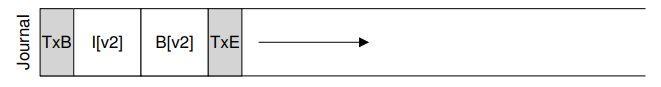
The data block Db, previously written to the log, would instead be written to the file system proper, avoiding the extra write; given that most I/O traffic to the disk is data, not writing data twice substantially reduces the I/O load of journaling.
Then when should we write data blocks to disk?
ext3 do like this:
- Data write: write data to final location; wait for completion(optional)
- Journal metadata write
- Journal commit:Write the transaction commit block (containing TxE) to the log; wait for the write to complete; the transaction (including data) is now committed. 在这一步完成同时，必须保证data也被传输结束。（那如果使用checksum的话，怎么保证journalok时候，data也肯定ok呢？如果metadata journal 没有问题，data还在transaction，这时候crash了，那recovery岂不是错的？）
- Checkpoint commit:
- Free
（this is ordered journaling, ext3 also provideunordered modes, which data can be written at any time)
Solution #3: Other Approaches
Soft Updates
This approach carefully orders all writes to the file system to ensure that the on-disk structures are never left in an inconsistent state. For example, by writing a pointed-to data block to disk before the inode that points to it, we can ensure that the inode never points to garbage; similar rules can be derived for all the structures of the file system
copy-on-write(COW) like FS ZFS
This technique never overwrites files or directories in place; rather, it places new updates to previously unused locations on disk. After a number of updates are completed, COW file systems flip the root structure of the file system to include pointers to the newly updated structures. Doing so makes keeping the file system consistent straightforward